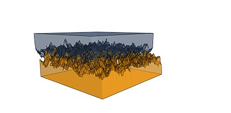
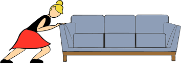
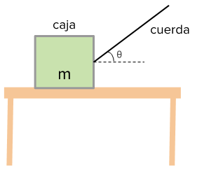
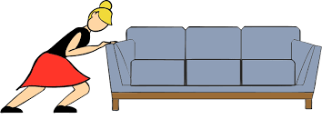
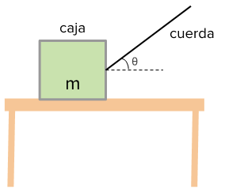

Fricción
La fuerza de fricción es una fuerza de contacto que se resiste al desplazamiento entre superficies.
Se genera debido a las imperfecciones, que en mayor parte son microscópicas, entre las superficies de contacto, aunque también existen
fenómenos de interacción electrostática entre superficies. Estas imperfecciones hacen que la fuerza R entre ambas
superficies no sea perfectamente perpendicular, generando un ángulo con la normal N. Por lo tanto,
la fuerza resultante se compone de la fuerza normal N y de la fuerza de rozamiento F.
Para que un objeto se mueva, debe levantarse hasta que los picos puedan rebasar la superficie de abajo. Por tanto, tan solo una fuerza
es necesaria para poner al objeto en movimiento. Gran parte de la fricción se debe en realidad a las fuerzas atractivas entre las moléculas de
las superficies en contacto, por lo que aun las superficies perfectamente lisas presentan fricción. Tales fuerzas también dependen de las sustancias
de las que están hechas las superficies.

Pero para entender los conceptos de los que se estarán hablando, y para comprender de una mejor manera cómo funciona la fricción, es necesario definir
algunos conceptos básicos relacionados con este tema.
- Coeficiente de fricción (μ): un número, típicamente entre 0 y 1, que describe la aspereza entre las superficies; mientras mayor sea el número,
más aspero será, y viceversa. Una razón de la fuerza de fricción con la fuerza normal. El coeficiente de fricción estático μs
es para superficies no deslizantes, mientras que el cinético μk es para superficies deslizantes.
Este coeficiente es un número adimensional, es decir que carece de unidades y, por tanto, de dimensiones físicas. Más adelante veremos el porqué. - Fuerza Normal (Fn): es una fuerza de contacto, que ejerce una superficie sobre un cuerpo apoyado sobre ella para evitar que los objetos sólidos se atraviesen entre sí. Esta es de igual magnitud y dirección, pero de sentido contrario a la fuerza ejercida por el cuerpo sobre la superficie.
Con esto en mente, podemos pasar a hablar sobre las características que hay en el rozamiento entre dos cuerpos:
Algunos autores sintetizan las leyes del comportamiento de la fricción en estos dos postulados:
- La fuerza de rozamiento tiene dirección paralela a la superficie de apoyo.
- El coeficiente de rozamiento depende exclusivamente de la naturaleza de los cuerpos en contacto, así como del estado en que estén sus superficies.
- La fuerza máxima de rozamiento es directamente proporcional a la fuerza normal que actúa entre las superficies.
- Para el mismo par de cuerpos, el rozamiento es mayor un momento antes de que comience el movimiento que cuando ya ha comenzado (es por eso que es más fácil mover un objeto en movimiento que uno en reposo).
Algunos autores sintetizan las leyes del comportamiento de la fricción en estos dos postulados:
- La resistencia al deslizamiento tangencial entre dos cuerpos es proporcional a la fuerza normal ejercida entre los mismos.
- La resistencia al deslizamiento tangencial entre dos cuerpos es independiente de las dimensiones de contacto entre ambos (es decir que la fuerza de arrastre de un objeto será la misma en cualquiera de sus "caras" o "lados").
Tipos de fricción
Existen dos tipos de rozamiento o fricción: la fricción estática (Ff,s, Fs o Fe)
y la fricción dinámica o cinética (Ff,k, Fk o Fd).
La fuerza de fricción estática es una fuerza entre dos superficies que impide que estas se deslicen o derrapen una sobre la otra. Esta fricción "empuja" en la dirección que evita que el objeto se deslice, lo que da como resultado el movimiento del objeto, si es que la fuerza aplicada es mayor a la fuerza de fricción.
La fuerza dinámica o cinética, de magnitud considerada constante, siempre se opone al deslizamiento, una vez comenzado, y trata de reducir la rapidez a la cual las superficies se deslizan una sobre la otra.
En pocas palabras, lo que las diferencia es que la primera actúa cuando los cuerpos están en reposo, mientras que la segunda lo hace cuando ya están en movimiento.
La fuerza de fricción estática es una fuerza entre dos superficies que impide que estas se deslicen o derrapen una sobre la otra. Esta fricción "empuja" en la dirección que evita que el objeto se deslice, lo que da como resultado el movimiento del objeto, si es que la fuerza aplicada es mayor a la fuerza de fricción.
La fuerza dinámica o cinética, de magnitud considerada constante, siempre se opone al deslizamiento, una vez comenzado, y trata de reducir la rapidez a la cual las superficies se deslizan una sobre la otra.
En pocas palabras, lo que las diferencia es que la primera actúa cuando los cuerpos están en reposo, mientras que la segunda lo hace cuando ya están en movimiento.
Unidades de medida y fórmulas
La fricción generalmente es medida en Newtons, pero por el hecho de ser una fuerza, también puede ser medida en libras, dinas, kilopondios, entre otros,
solo se tendría que hacer una conversión en caso de querer conocer su equivalencia en otra unidad de medida.
La ecuación para calcular la fuerza de fricción estática es la siguiente:
Donde |Fe| es la fricción estática, en Newtons, pudiendo ser menor o igual a la fuerza de fricción estática máxima.
μe es el coeficiente de fricción estática.
|Fn| es la fuerza normal, medida en Newtons, generalmente.
La ecuación para calcular la fuerza de fricción dinámica es la siguiente:
Donde |Fd| es la fricción dinámica en Newtons.
μd es el coeficiente de fricción dinámica.
|Fn| es la fuerza normal en Newtons.
De estas dos fórmulas se puede obtener el coeficiente de rozamiento, haciendo uso de álgebra, quedando de la siguiente forma:
Donde μ es el coficiente de rozamient.
|Ff| es la fuerza de fricción.
|Fn| es la fuerza normal.
La ecuación para calcular la fuerza de fricción estática es la siguiente:
Donde |Fe| es la fricción estática, en Newtons, pudiendo ser menor o igual a la fuerza de fricción estática máxima.
μe es el coeficiente de fricción estática.
|Fn| es la fuerza normal, medida en Newtons, generalmente.
La ecuación para calcular la fuerza de fricción dinámica es la siguiente:
Donde |Fd| es la fricción dinámica en Newtons.
μd es el coeficiente de fricción dinámica.
|Fn| es la fuerza normal en Newtons.
De estas dos fórmulas se puede obtener el coeficiente de rozamiento, haciendo uso de álgebra, quedando de la siguiente forma:
Donde μ es el coficiente de rozamient.
|Ff| es la fuerza de fricción.
|Fn| es la fuerza normal.
Aplicaciones de la fricción
Aunque no nos demos cuenta, o ni siquiera pensemos en ello, la fuerza de fricción está siempre presente, por ejemplo: la fuerza de fricción estática
es la que nos permite caminar, ya que al apoyar nuestro pie sobre el suelo, "nos agarramos" a éste y lo empujamos hacia atrás, y la respuesta que éste devuelve es
que nos empuja hacia delante, sin resbalar; si fuera lo contrario y nos deslizaramos, no seríamos capaces de caminar y nos quedaríamos en el mismo lugar, actuando,
por el contrario, la fuerza de fricción dinámica.
Otro ejemplo de fricción estática ocurre al avanzar un carro, ya que las llantas se "agarran" del suelo y le permite al auto seguir adelante, pero ¿cómo es esto posible? Pues bien, la parte baja de la rueda es la que se encuentra en contacto con el pavimento, y por tanto, está momentaneamente en reposo con respecto a la calle; el resto de la llanta rota alrededor del punto de contacto, permitiendo a la llanta girar y, eventualmente, al carro avanzar, y así continúa cambiando el punto de contacto conforme la llanta rueda. Pero, ¿qué pasaría si se acelera a fondo o se frena de golpe? Entonces habría un derrape y entraría en acción la fricción dinámica, ya que en el primer caso la llanta giraría tan rápido que no tendría tiempo de "agarrarse" a la calle, hasta que el auto comience a avanzar y entonces logre haber fricción estática; en el segundo caso, la rueda dejaría de girar y se deslizaría por el pavimento hasta que el carro se detenga.
Por otro lado, para la fuerza de fricción dinámica podemos encontrar ejemplos como al empujar o jalar algún mueble, pues se está deslizando a través del suelo; o al frotar piedras o madera para obtener fuego, pues la fricción genera calor; también al lavar la ropa en un lavadero, pues tallamos nuestras prendas contra los relieves de la piedra, generando espuma y así poder quitarle la suciedad; o en deportes como en béisbol cuando un jugador se barre a segunda base, o en patinaje sobre hielo, en donde se usan patines para que el desplazamiento sea mayor y así poder hacer aquellas piruetas y vueltas que caracterizan a aquél deporte.
Como ven, hay literalmente una infinidad de ejemplos y aplicaciones que implican la fuerza de fricción, ya sea estática o dinámica, desde actividades cotidianas y simples, hasta trabajos duros y complejos, pues la fricción es una parte importante de la física que sirve de base para conceptos y temas más complejos.
Otro ejemplo de fricción estática ocurre al avanzar un carro, ya que las llantas se "agarran" del suelo y le permite al auto seguir adelante, pero ¿cómo es esto posible? Pues bien, la parte baja de la rueda es la que se encuentra en contacto con el pavimento, y por tanto, está momentaneamente en reposo con respecto a la calle; el resto de la llanta rota alrededor del punto de contacto, permitiendo a la llanta girar y, eventualmente, al carro avanzar, y así continúa cambiando el punto de contacto conforme la llanta rueda. Pero, ¿qué pasaría si se acelera a fondo o se frena de golpe? Entonces habría un derrape y entraría en acción la fricción dinámica, ya que en el primer caso la llanta giraría tan rápido que no tendría tiempo de "agarrarse" a la calle, hasta que el auto comience a avanzar y entonces logre haber fricción estática; en el segundo caso, la rueda dejaría de girar y se deslizaría por el pavimento hasta que el carro se detenga.
Por otro lado, para la fuerza de fricción dinámica podemos encontrar ejemplos como al empujar o jalar algún mueble, pues se está deslizando a través del suelo; o al frotar piedras o madera para obtener fuego, pues la fricción genera calor; también al lavar la ropa en un lavadero, pues tallamos nuestras prendas contra los relieves de la piedra, generando espuma y así poder quitarle la suciedad; o en deportes como en béisbol cuando un jugador se barre a segunda base, o en patinaje sobre hielo, en donde se usan patines para que el desplazamiento sea mayor y así poder hacer aquellas piruetas y vueltas que caracterizan a aquél deporte.
Como ven, hay literalmente una infinidad de ejemplos y aplicaciones que implican la fuerza de fricción, ya sea estática o dinámica, desde actividades cotidianas y simples, hasta trabajos duros y complejos, pues la fricción es una parte importante de la física que sirve de base para conceptos y temas más complejos.
Ejercicios resueltos
Para comprender mejor el tema de fricción, y poder visualizar algunos ejemplos simples y comunes sobre este tema, se realizarán ejercicios que incluyen los conceptos vistos.
Ejercicio 1.- Una persona empuja un sofá que está en reposo sobre el suelo. El coeficiente de fricción estática es de 0.6 entre el piso y el sofá, mientras que el coeficiente de fricción dinámica es de 0.48. La persona lo empuja con las siguientes fuerzas:

Resolver la cantidad máxima de fricción estática. En este caso, la fuerza normal es igual a masa por la gravedad, quedando la siguiente formula:

Sustituir los valores.
Calcular.
Recordemos la fórmula y equivalencia del Newton, quedando:
Ahora que conocemos la fuerza de fricción estática máxima, podemos conocer si se moverá el sofá con las diferentes fuerzas aplicadas por la persona.
Para el primer caso, la persona empuja con una fuerza Femp= 300 N, por tanto habrá una fuerza de fricción estática de Fe= 300 N, lo que impedirá que el sofá se mueva.
Para el segundo caso, la persona empuja con una fuerza Femp= 700 N, por lo que habrá una fuerza de fricción estática de Fe= 700 N, entonces el sofá no se moverá.
En el tercer caso, la fuerza con la que la persona empuja es de Femp= 1500 N, es decir, mayor a la fuerza de fricción estática máxima, así que el sofá se comenzará a mover. Entonces habrá una fuerza de fricción dinámica que actúe en contra, la cual se puede calcular de la siguiente manera:
Sustituir valores y calcular.

Entonces, si la persona empuja con una fuerza de 1500 N, habrá una fricción dinámica de 706.32 N.
Ejercicio 2.- Una caja de plumas de 4.5 kg se jala con velocidad constante a través de una mesa por medio de una cuerda. La cuerda está a un ángulo de θ = 40° y bajo una tensión de 3.3 N.

¿Cuál es el coeficiente de rozamiento dinámico entre la mesa y la caja? Como no conocemos el coeficiente de fricción dinámica, no se puede resolver directamente con su fórmula. Así que dibujaremos un diagrama de fuerzas usando la segunda ley de Newton.
Comenzaremos con la expresión de dirección horizontal de la segunda ley de Newton.
Se sustituyen las fuerzas, aceleración y masa.
Se sustituye la componente horizontal de la tensión y la fórmula de fricción dinámica.
Multiplicamos por la masa a ambos lados de la igualdad.
Despejamos el coeficiente de fricción dinámica usando algebra.
Sustituimos Fn por su fórmula, masa por gravedad, menos la componente vertical del vector tensión T. Esto porque la fuerza normal se verá disminuida al estar siendo jalada por la cuerda hacia arriba en diagonal, como lo muestra el diagrama de fuerzas. Quedando:
Se sustituyen los valores y calculamos. En el denominador se puede observar que el producto de masa con gravedad nos daría en Newtons, quedando en la fracción términos semejantes, y a la vez cancelándose entre ellos, probando que el coeficiente de fricción es adimensional.
Ejercicio 1.- Una persona empuja un sofá que está en reposo sobre el suelo. El coeficiente de fricción estática es de 0.6 entre el piso y el sofá, mientras que el coeficiente de fricción dinámica es de 0.48. La persona lo empuja con las siguientes fuerzas:
- 300 N
- 700 N
- 1500 N

Resolver la cantidad máxima de fricción estática. En este caso, la fuerza normal es igual a masa por la gravedad, quedando la siguiente formula:
Sustituir los valores.
Calcular.
Recordemos la fórmula y equivalencia del Newton, quedando:
Ahora que conocemos la fuerza de fricción estática máxima, podemos conocer si se moverá el sofá con las diferentes fuerzas aplicadas por la persona.
Para el primer caso, la persona empuja con una fuerza Femp= 300 N, por tanto habrá una fuerza de fricción estática de Fe= 300 N, lo que impedirá que el sofá se mueva.
Para el segundo caso, la persona empuja con una fuerza Femp= 700 N, por lo que habrá una fuerza de fricción estática de Fe= 700 N, entonces el sofá no se moverá.
En el tercer caso, la fuerza con la que la persona empuja es de Femp= 1500 N, es decir, mayor a la fuerza de fricción estática máxima, así que el sofá se comenzará a mover. Entonces habrá una fuerza de fricción dinámica que actúe en contra, la cual se puede calcular de la siguiente manera:
Sustituir valores y calcular.
Entonces, si la persona empuja con una fuerza de 1500 N, habrá una fricción dinámica de 706.32 N.
Ejercicio 2.- Una caja de plumas de 4.5 kg se jala con velocidad constante a través de una mesa por medio de una cuerda. La cuerda está a un ángulo de θ = 40° y bajo una tensión de 3.3 N.

¿Cuál es el coeficiente de rozamiento dinámico entre la mesa y la caja? Como no conocemos el coeficiente de fricción dinámica, no se puede resolver directamente con su fórmula. Así que dibujaremos un diagrama de fuerzas usando la segunda ley de Newton.
Comenzaremos con la expresión de dirección horizontal de la segunda ley de Newton.
Se sustituyen las fuerzas, aceleración y masa.
Se sustituye la componente horizontal de la tensión y la fórmula de fricción dinámica.
Multiplicamos por la masa a ambos lados de la igualdad.
Despejamos el coeficiente de fricción dinámica usando algebra.
Sustituimos Fn por su fórmula, masa por gravedad, menos la componente vertical del vector tensión T. Esto porque la fuerza normal se verá disminuida al estar siendo jalada por la cuerda hacia arriba en diagonal, como lo muestra el diagrama de fuerzas. Quedando:
Se sustituyen los valores y calculamos. En el denominador se puede observar que el producto de masa con gravedad nos daría en Newtons, quedando en la fracción términos semejantes, y a la vez cancelándose entre ellos, probando que el coeficiente de fricción es adimensional.